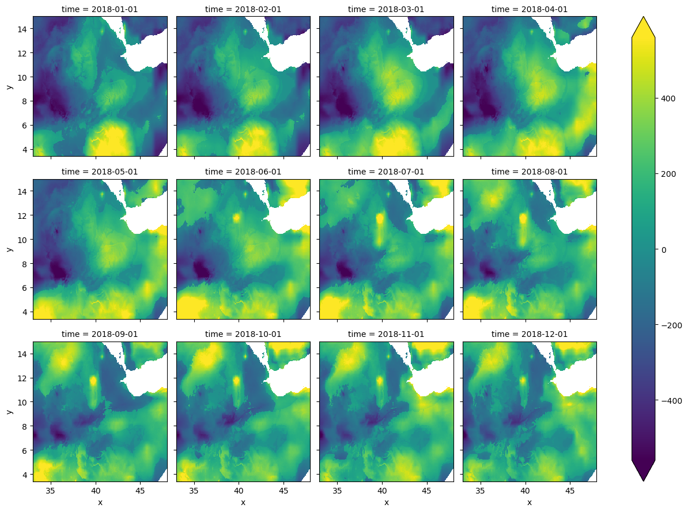
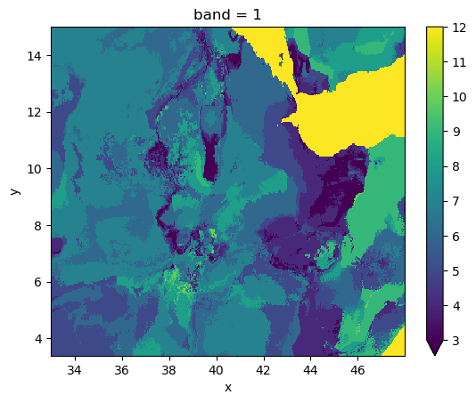
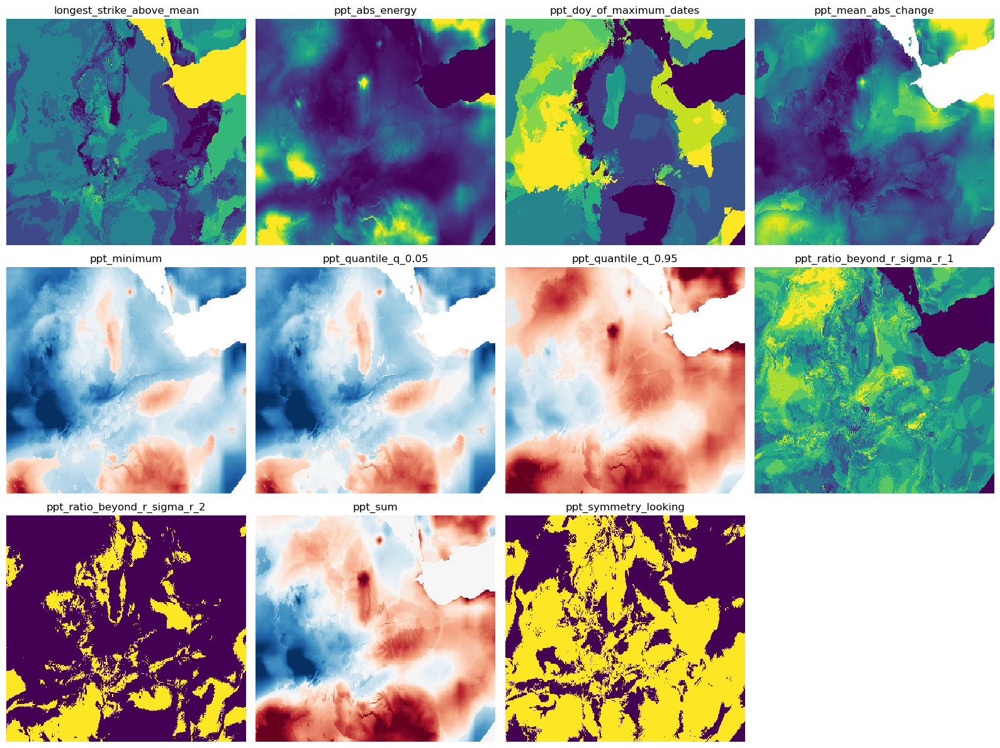

Generating time series features with xr_fresh
This notebook demonstrates how to generate time series features using the xr_fresh library. The library is designed to work with rasters, xarray datasets and data arrays, and it provides a simple and flexible way to generate features from time series data.
import geowombat as gw
import os
from datetime import datetime
import matplotlib.pyplot as plt
import pandas as pd
from glob import glob
os.getcwd()
/home/mmann1123/miniconda3/envs/xr_fresh_update/lib/python3.9/site-packages/tqdm/auto.py:21: TqdmWarning: IProgress not found. Please update jupyter and ipywidgets. See https://ipywidgets.readthedocs.io/en/stable/user_install.html
from .autonotebook import tqdm as notebook_tqdm
'/home/mmann1123/Documents/github/xr_fresh/docs/source'
Read in data and sort by date
# change working directory
os.chdir("../../xr_fresh/data/")
band_name = 'ppt' # used to rename outputs
file_glob = f"pdsi*tif"
strp_glob = f"pdsi_%Y%m_4500m.tif"
dates = sorted(datetime.strptime(string, strp_glob)
for string in sorted(glob(file_glob)))
files = sorted(glob(file_glob))
# print dates and files in a table
pd.DataFrame({'date': dates, 'file': files})
| date | file | |
|---|---|---|
| 0 | 2018-01-01 | pdsi_201801_4500m.tif |
| 1 | 2018-02-01 | pdsi_201802_4500m.tif |
| 2 | 2018-03-01 | pdsi_201803_4500m.tif |
| 3 | 2018-04-01 | pdsi_201804_4500m.tif |
| 4 | 2018-05-01 | pdsi_201805_4500m.tif |
| 5 | 2018-06-01 | pdsi_201806_4500m.tif |
| 6 | 2018-07-01 | pdsi_201807_4500m.tif |
| 7 | 2018-08-01 | pdsi_201808_4500m.tif |
| 8 | 2018-09-01 | pdsi_201809_4500m.tif |
| 9 | 2018-10-01 | pdsi_201810_4500m.tif |
| 10 | 2018-11-01 | pdsi_201811_4500m.tif |
| 11 | 2018-12-01 | pdsi_201812_4500m.tif |
Now we will open the data to see what it looks like using geowombat, see docs here.
# open xarray
with gw.open(files,
band_names=[band_name],
time_names = dates,nodata=-9999 ) as ds:
ds = ds.gw.mask_nodata()
a = ds.plot(col="time", col_wrap=4, cmap="viridis", robust=True)
# a.fig.savefig('../../writeup/figures/precip.png')

Calculate the longest consecutive streak of days above the mean
%%time
# make temp folder
import tempfile
from pathlib import Path
temp_dir = Path(tempfile.mkdtemp())
from xr_fresh.feature_calculator_series import longest_strike_below_mean
out_path = os.path.join(temp_dir, 'longest_strike_above_mean.tif')
# use rasterio to create a new file tif file
with gw.series(files,window_size=[256, 256]) as src:
src.apply(
longest_strike_below_mean(),
bands=1,
num_workers=12,
outfile=out_path,
)
2025-05-21 15:43:16.213397: W external/xla/xla/service/platform_util.cc:198] unable to create StreamExecutor for CUDA:0: failed initializing StreamExecutor for CUDA device ordinal 0: INTERNAL: failed call to cuDevicePrimaryCtxRetain: CUDA_ERROR_OUT_OF_MEMORY: out of memory; total memory reported: 12516655104
CUDA backend failed to initialize: INTERNAL: no supported devices found for platform CUDA (Set TF_CPP_MIN_LOG_LEVEL=0 and rerun for more info.)
100%|██████████| 4/4 [00:00<00:00, 68.72it/s]
CPU times: user 549 ms, sys: 154 ms, total: 703 ms
Wall time: 573 ms
with gw.open(out_path) as ds:
ds.plot(robust=True)
plt.show()

Generate time series features stack
# create list of desired series
feature_list = {
"minimum": [{}],
"abs_energy": [{}],
"doy_of_maximum": [{"dates": dates}],
"mean_abs_change": [{}],
"ratio_beyond_r_sigma": [{"r": 1}, {"r": 2}],
"symmetry_looking": [{}],
"sum": [{}],
"quantile": [{"q": 0.05}, {"q": 0.95}],
}
from xr_fresh.extractors_series import extract_features_series
# Extract features from the geospatial time series
extract_features_series(files, feature_list, band_name, temp_dir, num_workers=12, nodata=-9999)
100%|██████████| 4/4 [00:00<00:00, 189.45it/s]
100%|██████████| 4/4 [00:00<00:00, 460.07it/s]
100%|██████████| 4/4 [00:00<00:00, 63.63it/s]
100%|██████████| 4/4 [00:00<00:00, 153.49it/s]
100%|██████████| 4/4 [00:00<00:00, 27.52it/s]
100%|██████████| 4/4 [00:00<00:00, 5603.61it/s]
100%|██████████| 4/4 [00:00<00:00, 37.88it/s]
100%|██████████| 4/4 [00:00<00:00, 13819.78it/s]
100%|██████████| 4/4 [00:00<00:00, 154.85it/s]
100%|██████████| 4/4 [00:00<00:00, 317.72it/s]
features = sorted(glob(os.path.join(temp_dir, "*.tif")))
feature_names = [os.path.basename(f).split(".")[0] for f in features]
pd.DataFrame({'feature': feature_names, 'file': features})
| feature | file | |
|---|---|---|
| 0 | longest_strike_above_mean | /tmp/tmph5cfydxb/longest_strike_above_mean.tif |
| 1 | ppt_abs_energy | /tmp/tmph5cfydxb/ppt_abs_energy.tif |
| 2 | ppt_doy_of_maximum_dates | /tmp/tmph5cfydxb/ppt_doy_of_maximum_dates.tif |
| 3 | ppt_mean_abs_change | /tmp/tmph5cfydxb/ppt_mean_abs_change.tif |
| 4 | ppt_minimum | /tmp/tmph5cfydxb/ppt_minimum.tif |
| 5 | ppt_quantile_q_0 | /tmp/tmph5cfydxb/ppt_quantile_q_0.05.tif |
| 6 | ppt_quantile_q_0 | /tmp/tmph5cfydxb/ppt_quantile_q_0.95.tif |
| 7 | ppt_ratio_beyond_r_sigma_r_1 | /tmp/tmph5cfydxb/ppt_ratio_beyond_r_sigma_r_1.tif |
| 8 | ppt_ratio_beyond_r_sigma_r_2 | /tmp/tmph5cfydxb/ppt_ratio_beyond_r_sigma_r_2.tif |
| 9 | ppt_sum | /tmp/tmph5cfydxb/ppt_sum.tif |
| 10 | ppt_symmetry_looking | /tmp/tmph5cfydxb/ppt_symmetry_looking.tif |
# Plot all files in the temp directory with 4 columns and cleaned titles
n_cols = 4
n_rows = (len(features) + n_cols - 1) // n_cols
fig, axes = plt.subplots(n_rows, n_cols, figsize=(16, 4 * n_rows))
for idx, file in enumerate(features):
row, col = divmod(idx, n_cols)
ax = axes[row, col] if n_rows > 1 else axes[col]
with gw.open(file) as ds:
ds.plot(ax=ax, robust=True, add_colorbar=False)
title = os.path.basename(file).replace('.tif', '')
ax.set_title(title)
ax.axis('off')
# Hide any unused subplots
for idx in range(len(features), n_rows * n_cols):
row, col = divmod(idx, n_cols)
ax = axes[row, col] if n_rows > 1 else axes[col]
ax.axis('off')
plt.tight_layout()
# plt.savefig("../../writeup/figures/features.png", dpi=300, bbox_inches="tight")
plt.show()

# clean up temp directory
import shutil
shutil.rmtree(temp_dir)